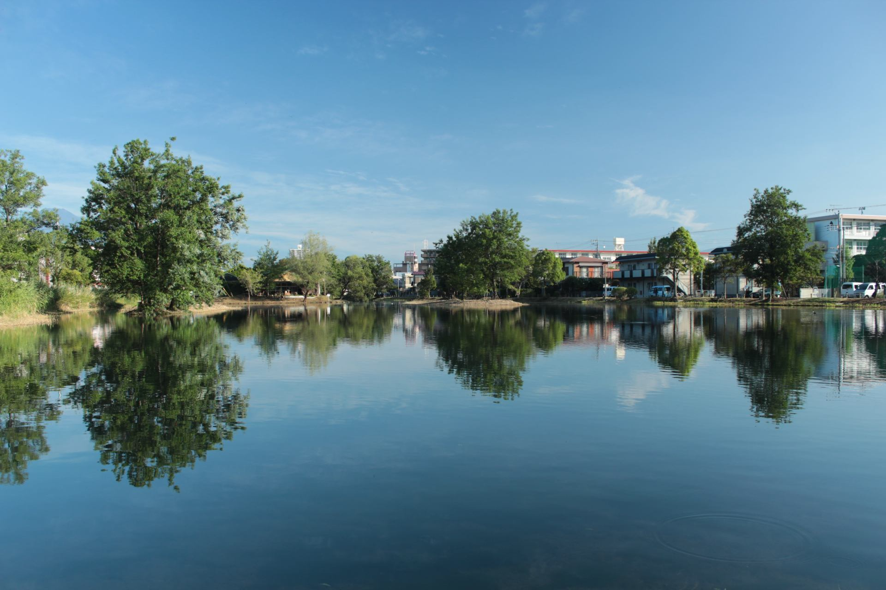

お店について
店名から広げるイメージ
「花と緑のカフェ」という屋号から、水辺に咲く草花や、木もれ日の下の若葉を思い浮かべました。ここでご紹介する風景は、あくまで店名から連想したイメージです。店内の様子を表すものではありません。
店名の由来やお店の想いは、準備中(お問い合わせください)。
掲載写真はイメージ素材です(実際の店舗・商品とは異なります)。撮影地は三島ではありません。
三島のこと

三島市は、富士山の雪解け水が湧き出ることで知られる、水の豊かな町です。市内には、せせらぎの音を聞きながら歩ける水辺があります。散歩の合間に、ひと休みしたくなる町です。
富士山遠景のイメージ。この写真は千葉県側から撮影された遠景で、三島からの眺めではありません。
写真はイメージです(撮影地が三島市とは限りません)。
お店の基本情報
| 店名 | 花と緑のカフェGuriGuri(グリグリ) |
|---|---|
| 所在地 | 静岡県三島市安久646-7 |
| 電話 | 055-941-5959 |
| cafe_guriguri_mishima | |
| 営業時間 | 準備中(お問い合わせください) |
| 定休日 | 準備中(お問い合わせください) |
| 駐車場 | 準備中(お問い合わせください) |
| 席数 | 準備中(お問い合わせください) |
スタッフ
準備中(お問い合わせください)
Instagramで日々の様子を
お店からのお知らせは、Instagramでご覧いただけます。
Instagramを開く(@cafe_guriguri_mishima)